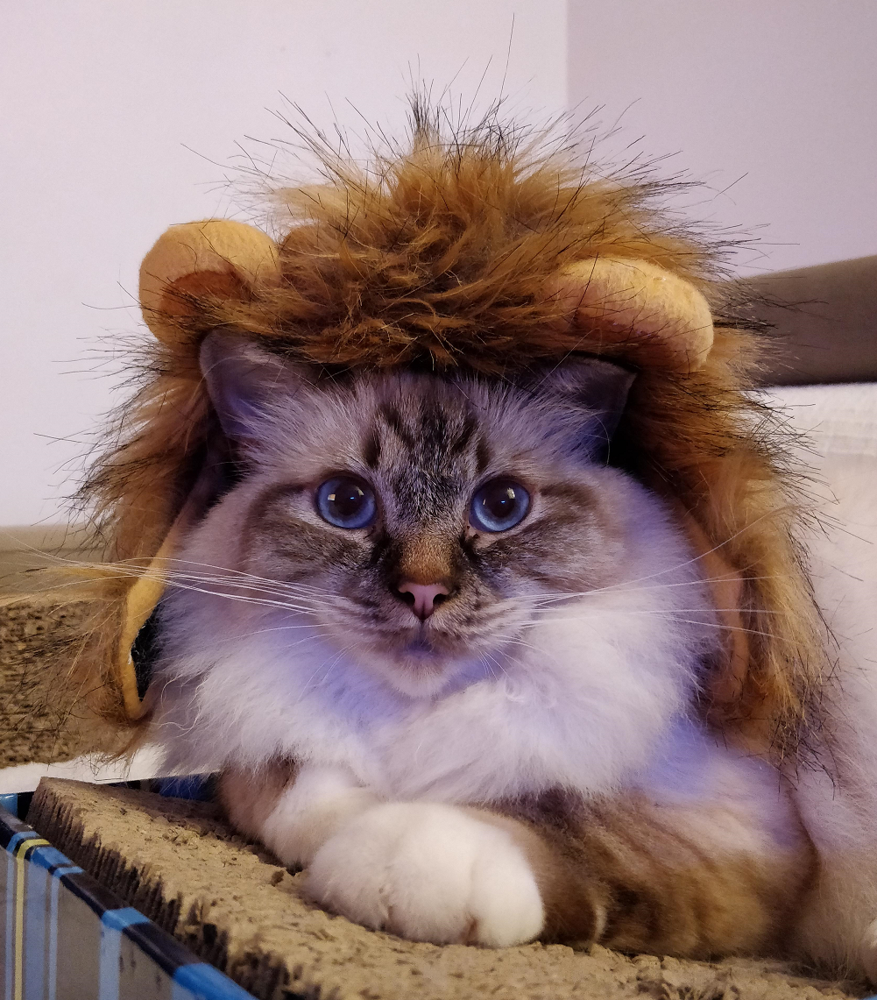

Application de gestion d’une garderie pour chats, chattes, chatons
Nombre de chats actuellement en pension : 14
Prochaines sorties : Lux, Mercure, Pepito, Iska, Indochine
Prochaines arrivées : Pagodon, Minette, Isaquoi, Bully
Cette page est purement fictive pour les besoins du TP !
Mais le créateur de ce site est passionné par ces petits félins domestiqués :)
